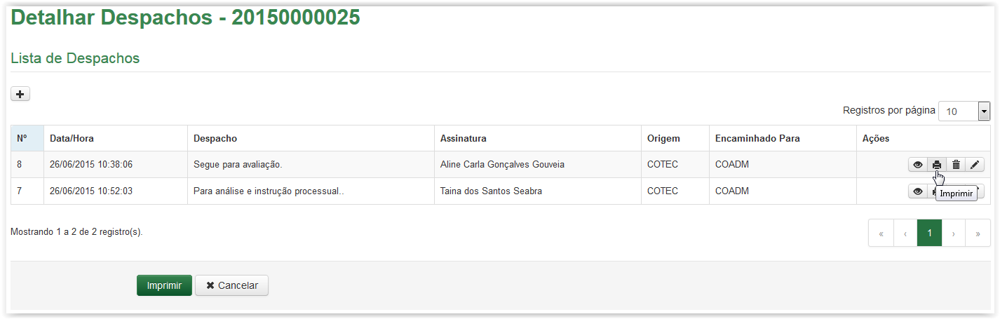
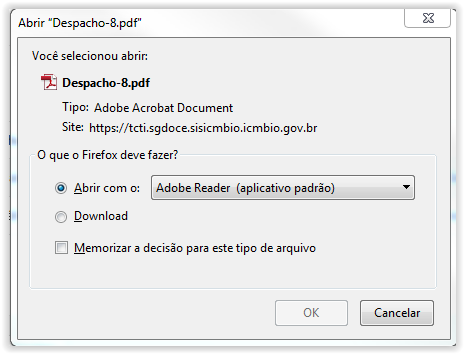
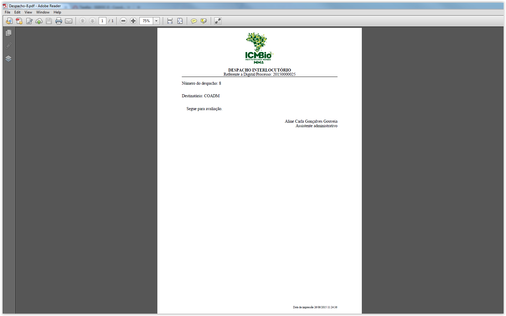

Despachar artefatos
A partir da Lista de Despachos, clique no ícone :

Ícone Imprimir Folha de Despacho
O sistema apresenta a tela abaixo. Para visualizar a Folha de Despacho clique no botão  , caso contrário, clique no botão
, caso contrário, clique no botão  :
:

Solicitação para apresentação ou download do documento em formato "PDF"
Ao clicar no botão a Folha de Despacho, em formato “PDF”, é apresentada:

Folha de Despacho
A Folha de Despacho apresenta no cabeçalho o logotipo do ICMBio, o título e o número da Digital ou Processo ao qual se refere. Logo após, é apresentado o despacho selecionado exibindo as seguintes informações: número, Unidade e texto do despacho, além do nome e cargo de quem assinou o despacho. No rodapé é apresentado ainda a data e hora da impressão. Se desejar, a Folha de Despacho poderá ser impressa.
IMPORTANTE!!
 Lembrete:
Lembrete:
Quando o despacho for de saída da Unidade ou do Instituto será necessária a impressão da folha de despacho, além da assinatura física do responsável pela área!
Created with the Personal Edition of HelpNDoc: Produce Kindle eBooks easily